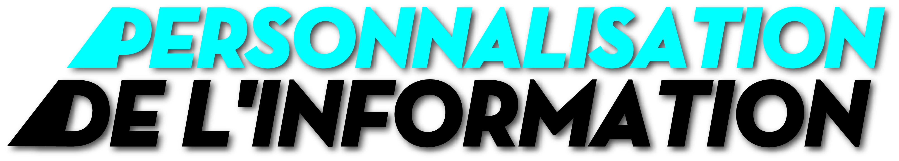

/ L'info en
temps réel


Personnes par jour consultent les sites
d'information généraliste en ligne
10%
Des lecteurs
de livres
téléchargent des
livres numériques
40 %

Des lecteurs de presse écrite se sont convertis au numérique.
Ces chiffres évoluent lentement, mais tous les lecteurs de presse convertissent progressivement aux nouveaux supports, bien plus vite que les lecteurs de livres qui ne sont que 10% à télécharger des e-books. (Philippe person, directeur entertainement chez Gfk)
Journaux & Magazine
BAISSE DES VENTES
Trop chers/copies versions papier
79%
des lecteurs numériques
privilégient les sites des
quotidiens nationaux
sur le web se développe petit à petit
un nouveau média :
"les pure players de l'information"
/ Divices et b
interactions
"Emmener l'industrie du livre et de la presse vers sa maturité numérique"
révolution b
de leur industrie
- éditeurs
- auteurs
- libraires
- diffuseurs
- groupe de presse
- - étendre leurs champs d'action sur les nouveaux supports
- - développement d'une culture de l'instantanné, d'échange
et de gratuité ! - - moderniser leurs outils et renouveler leurs formats !
- - répandre leur distribution pour l'adapter au nouvel
environnement !
/ Selon la régie publicitaire AdMob /
les internautes passent plus de temps sur ce nouvel écran que sur leurs ordinateurs.
magazine numérique / au contenu exclusif
mise à jour pendant le mois / à 2,99$ par mois
un quotidien / à moins de 4$ par mois
soit 0,99$ par semaine / journalisme de qualité
- + personnalisation
- + mise en valeur du contenu
- + grande liberté de ton
- + interagir & débattre
- + pluri-média
- site de presse nationale
- site de presse régionale
- site de presse magazine
web 2.0
Participatif / Contributif / Expressif
Les utilisateurs deviennent contributeurs de contenus. La simplification des outils permet une meilleure utilisation et appropriation du web. L'internaute devient une personne active sur la toile = création du web social. On peut partager, créer, commenter...
Le mot Blog est une contraction de "webnet" et de "log" journal. C'est une sorte de journal web, ouvert à tous et facile d'utilisation. Le blog devient un véritable outil d'information, repris aujourd'hui par les médias traditionnels.
Un wiki est un système de gestion de contenu de site web qui rend les pages Web réalisables et modifiables par les visiteurs successifs autorisés. L’exemple le plus connu est l’encyclopédie collective Wikipédia créée en 2001, basée sur le principe qu’une entrée puisse être ajoutée par n’importe quel utilisateur du web et modifiée par un autre. De nouveaux sites de partagent voient ensuite le jour : Flickr et Youtube.
La notoriété des blogs a notamment été impulsée par les militaires américains lors de la secode guerre du golfe en mars 2003. Ces warblog donnaient l’impression d’une liberté de ton et d’émancipation par rapport aux contraintes éditoriales ou professionnelles. Ils permettent aussi d’avoir accès à des informations que les journalistes ne possèdent pas, durant les guerres, ou dans les pays privés de liberté d’expression.
Aujourd’hui on voit une multiplication des blogs de journalistes affranchis des contraintes éditoriales habituelles. Ceux-ci redécouvrent la communication directe avec les lecteurs. Et ces lecteurs, donnent leurs avis, enrichissent les textes en informations, ils commentent et créent la vie autour d’un évènement.
70% des journaux
américains
proposent
des blogs
journalistiques
« LE JOURNALISME
CITOYENS »
RUE89 / AGORAVOX ...
Ce sont des sites basés sur la co-production de contenus par les journalistes et les internautes, «synonyme de circulation et de révolution de l’information». Tout internaute peut en effet envoyer des contributions, qui seront ensuite sélectionnées par le site, en fonction de leurs intérêt, de leur pertinence et de leur qualité. Les lecteurs participent aussi en commentant et en notant les productions publiées.
/Flash
Information
Les réseaux sociaux mettent les internautes un peu plus au coeur de l'information. Ils deviennent acteur, puisque c'est eux qui construisent les informations.

d'utilisateurs avant le 1er juin 2011

d'utilisateurs en France
Semiocast vient de publier une étude portant sur la totalité des 263 millions de profils d’utilisateurs de Twitter créés avant le 1er juin 2011. dans l’hexagone, il subsiste à l’heure actuelle 3.3 millions d’utilisateurs de Twitter, dont la moitié étant active.

- Sans modification
enregistrée - Changement d'abonnements
et d'envoi de messages - Changement d'abonnements
uniquement - Compte jamais utilisé
- Envoi de message
uniquement - Autre modification
du profil

Un pote aux Etats-Unis vient de me rapporter que #DSK aurait été arrêté par la police dans un hotel à NYC il y a une heure ...
- millions de comptes actifs
- millions de publications
quotidiennes - millions de photos sont
publiées par jour - millions d'utilisateurs actifs accèdent
à Facebook via leur mobile
/ Filtre des
informations
70%

Des nouveaux contenus du
web sont générés par
des particuliers
«Il existe une panoplie infinie de documents variés sur Internet dont l'exactitude, la fiabilité et la valeur varient. Contrairement à la plupart des médias d'information conventionnels, de l'information est rendue publique sans que personne n'ait à en approuver le contenu.»

HOAXBUSTER


L'information la plus porteuse de valeur ajoutée est
aujourd'hui celle qui nous fait gagner du temps.

Paper.li vous permet de créer un journal personnalisé en fonction de vos centres d'intérêts et de le partager via les réseaux sociaux.
L'interactivité permet aux utilisateurs de traiter le contenu de manière différenciée selon leurs centres d'intérêts.
Pulse redéfinit l'actualité en vous donnant l'opportunité d'expérimenter les informations que vous désirez provenant de vos sources habituelles, de vos blogs préférés et des réseaux sociaux - Le tout dans une belle interface.
 Flipboard est une belle et rapide façon de visionner vos médias sociaux avec une mise en page de magazine plaisante à lire
Flipboard est une belle et rapide façon de visionner vos médias sociaux avec une mise en page de magazine plaisante à lire
 News.me met en forme les tweets des personnes qui vous intéressent. Il vous propose de lire les articles partagés directement sur votre iPad.
News.me met en forme les tweets des personnes qui vous intéressent. Il vous propose de lire les articles partagés directement sur votre iPad.


« La disparition d’une base commune d’informations nous rend étroits d’esprit, moins aventureux intellectuellement et plus vulnérables à la propa- gande et à la manipulation. » Pariser
Launch Modal
Ex his quidam aeternitati se commendari posse per statuas aestimantes eas ardenter adfectant quasi plus praemii de figmentis aereis sensu carentibus adepturi, quam ex conscientia honeste recteque factorum, easque auro curant inbracteari, quod Acilio Glabrioni delatum est primo, cum consiliis armisque regem superasset Antiochum. quam autem sit pulchrum exigua haec spernentem et minima ad ascensus verae gloriae tendere longos et arduos, ut memorat vates Ascraeus, Censorius Cato monstravit. qui interrogatus quam ob rem inter multos... statuam non haberet malo inquit ambigere bonos quam ob rem id non meruerim, quam quod est gravius cur inpetraverim mussitare. Ex his quidam aeternitati se commendari posse per statuas aestimantes eas ardenter adfectant quasi plus praemii de figmentis aereis sensu carentibus adepturi, quam ex conscientia honeste recteque factorum, easque auro curant inbracteari, quod Acilio Glabrioni delatum est primo, cum consiliis armisque regem superasset Antiochum. quam autem sit pulchrum exigua haec spernentem et minima ad ascensus verae gloriae tendere longos et arduos, ut memorat vates Ascraeus, Censorius Cato monstravit. qui interrogatus quam ob rem inter multos... statuam non haberet malo inquit ambigere bonos quam ob rem id non meruerim, quam quod est gravius cur inpetraverim mussitare.